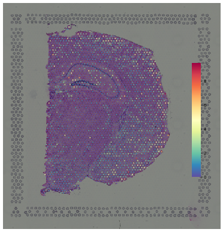
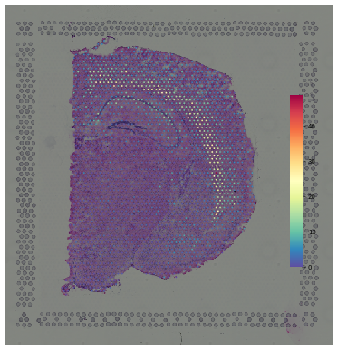
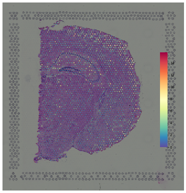
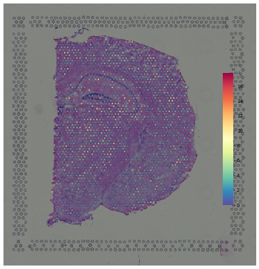
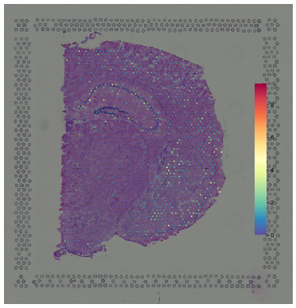
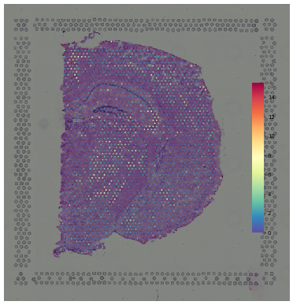
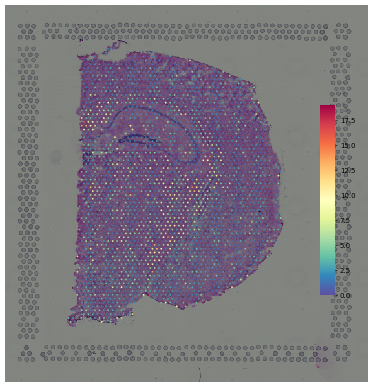

SpatialDE tutorial¶
1. Read¶
1.2 stlearn.Read10X¶
[3]:
import stlearn as st
import pandas as pd
[4]:
data = st.Read10X(path="../UQ/10X/Brain_coronal/")
[7]:
data
[7]:
AnnData object with n_obs × n_vars = 2698 × 31053
obs: 'in_tissue', 'array_row', 'array_col', 'imagecol', 'imagerow'
var: 'gene_ids', 'feature_types', 'genome'
uns: 'spatial'
obsm: 'spatial'
2 Preprocessing¶
2.1. Filter, normalize, scale & PCA¶
[8]:
st.pp.filter_genes(data,min_cells=0.01*data.n_vars)
st.pp.normalize_total(data)
data.obsm['normalized'] = pd.DataFrame(data.X.toarray(), index=data.obs_names, columns=data.var_names)
Normalization step is finished in adata.X
2.2 SpatialDE¶
[17]:
st.tl.SpatialDE(data, use_data='normalized', top_genes=10)
SpatialDE results stored in adata.uns['SpatialDE_results'] and adata.uns['SpatialDE_top_genes']
Plot top spatially differential expressing genes¶
[32]:
%pylab inline
figsize(10, 10)
for i, g in enumerate(data.uns['SpatialDE_top_genes']):
print('\n'+data.uns['SpatialDE_top_genes'][i]+':')
st.pl.gene_plot(data, genes=data.uns['SpatialDE_top_genes'][i], title=data.uns['SpatialDE_top_genes'][i], dpi=50)
Populating the interactive namespace from numpy and matplotlib
Pak6:

Fam189a1:
3110035E14Rik:

Kctd1:

Actr2:
Cntnap1:

Egr4:

Hapln4:

Atp1b3:

Usp54:
assuming 5 different patterns and iterate till ELBO converges¶
(Careful! This step could take very long time)¶
[ ]:
st.tl.microenv.spatial_patterns(data, data.uns['SpatialDE_results'], C=3)
Plot all spatial expression patterns with genes in each pattern¶
[ ]:
figsize(20, 3)
for i in range(3):
plt.subplot(1, 3, i + 1)
st.pl.gene_plot(data, genes=data.uns['pattern_'+str(i)], method="CumSum")
[ ]:
for i in range(5):
print('Pattern {}'.format(i))
print(data.uns['pattern_' + str(i)])
print()
[ ]: